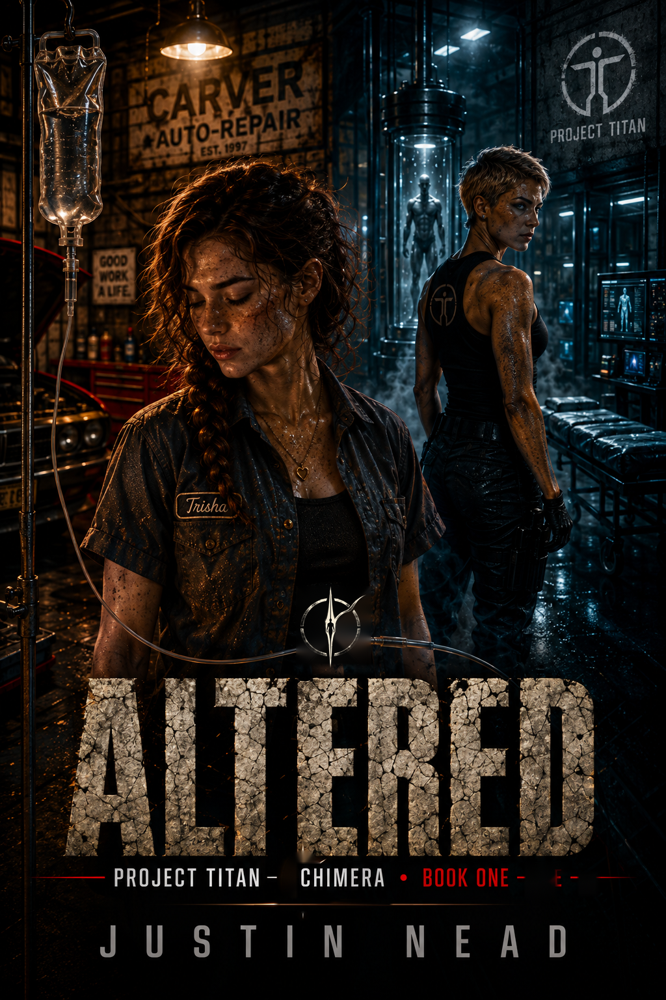

ALTERED
Trisha Valdren thought she knew what came next.
At nineteen, Trisha is trying to build a life of her own in Carver.
Work. Friends. Relationships. Plans for a future that still feels close enough to reach.
Then everything changes.
ALTERED begins a new branch of the Project Titan Universe: a story about survival, identity, and what remains when the life you expected is suddenly no longer guaranteed.
Project Titan — Chimera explores more mature subject matter than the original Project Titan series and may include stronger language, graphic violence, sexual content, disturbing situations, and other adult themes. Reader discretion is advised.
A New Story Begins
ALTERED introduces Trisha Valdren and opens the Chimera branch of the Project Titan Universe.
Her story begins far from secret missions and extraordinary abilities. It begins with an ordinary nineteen-year-old, the people she loves, and a future she assumes will still be waiting for her tomorrow.
What follows will change the direction of her life—and eventually bring her into a much larger world.